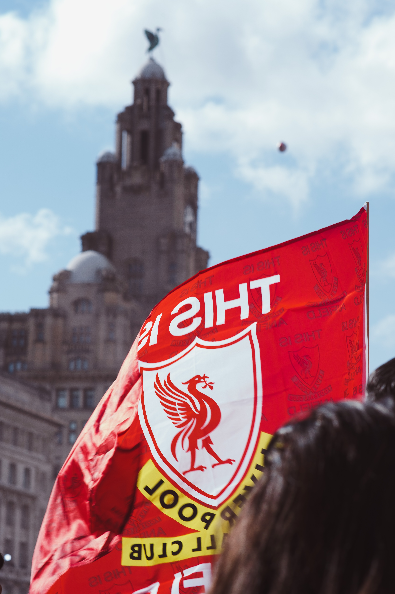

리버풀 폼 미쳤다 좀만 더 열심히 하면 진짜 할 만 하다고 생각한다 제발
잉글랜드 프리미어 리그의 프로 축구 클럽. 연고지는 머지사이드 주 리버풀. 홈 구장은 안필드.
1892년에 창단되어 빌 샹클리와 밥 페이즐리 감독 시절, 붉은 제국이라 불리는 전성기를 보냈고[13] 명승부라 칭해지는 이스탄불의 기적과 안필드의 기적의 주인공이기도 하다.
1부 리그 통산 19회 우승[14]을 차지하였으며, 잉글랜드 클럽 중 UEFA 챔피언스 리그 최다 우승팀으로[15] 잉글랜드에서 유일하게 빅 이어를 영구 소장한[16] 클럽이다.